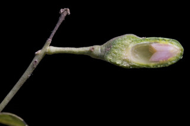
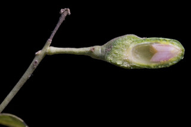

Trees, slightly buttressed, up to 16 m tall.
ಸ್ವಲ್ಪ ಮಟ್ಟಿನ ಆನಿಕೆಯುಳ್ಳ ,16 ಮೀ.ವರೆವಿಗೆ ಬೆಳೆಯುವ ಮರಗಳು.
ചെറിയ വപ്രമൂലമുളള, 16 മീറ്റര് വരെ ഉയരമുളള മരങ്ങള്.
மரங்கள் தாங்கு வேர்களுடையது (பட்ரஸ்டு), 16 மீ. உயரம் வரை வளரக்கூடியது.
Bark smooth, light brown with strong cinnamon smell; blaze brown.
ತೊಗಟೆ ನಯವಾಗಿದ್ದು, ತೆಳು ಕಂದು ಬಣ್ಣ ಹೊಂದಿರುತ್ತದೆ ಮತ್ತು ತೀಕ್ಷ್ಣವಾದ ದಾಲ್ಚಿನ್ನಿಯ ಸುವಾಸನೆ ಹೊಂದಿರುತ್ತದೆ;ಕಚ್ಚು ಮಾಡಿದ ಜಾಗ ಕಂದು ಬಣ್ಣದ -ಲ್ಲಿರುತ್ತದೆ.
കടുത്ത സിന്നമണ് (കറുവപ്പട്ട) മണമുളള, ഇളം തവിട്ട് നിറമുളള മിനുസമായ പുറംതൊലി; വെട്ട്പാടിന് പിങ്ക് നിറം.
மரத்தின் பட்டை வழுவழுப்பானது, வெளிறிய ப்ரவுன் நிறமானது, நறுமணமிக்கது; உள்பட்டை ப்ரவுன் நிறமானது.
Branchlets slender, subterete, glabrous
ಕಿರುಕೊಂಬೆಗಳು ತೆಳುವಾಗಿರುತ್ತವೆ ಮತ್ತು ಉಪದುಂಡಾಕಾರದಲ್ಲಿದ್ದು ರೋಮರಹಿತ -ವಾಗಿರುತ್ತವೆ.
അരോമിലമായ, ഏതാണ്ട് ഉരുണ്ടിരിക്കുന്ന, നേര്ത്ത, ഉപശാഖകള്.
சிறிய நுனிக்கிளைகள் மெல்லியது, குறுக்குவெட்டுத் தோற்றத்தில் வளையம் போன்றது, உரோமங்களற்றது.
Leaves simple, opposite to subopposite, rarely alternate, spiral; petiole to 2 cm long, planoconvex in cross section, glabrous; lamina 8-16 x 3-5 cm, elliptic-ovate to elliptic-lanceolate apex acute to acuminate, base acute to attenuate, margin entire, glabrous, coriaceous; trinerved (rarely 5-nerved), suprabasal, laterals not reaching the leaf apex, strongly cinnamon smell; tertiary_nerves horizontally_percurrent; higher order nerves minutely reticulate.
ಎಲೆಗಳು ಸರಳವಾಗಿದ್ದು,ಅಭಿಮುಖದಿಂದ ಉಪಅಭಿಮುಖವರೆಗಿನ ಮಾದರಿಯಲ್ಲಿ ಜೋಡನೆಗೊಂಡಿರುತ್ತವೆ, ಅಪರೂಪವಾಗಿ ಪರ್ಯಾಯ ಹಾಗೂ ಸುತ್ತು ಜೋಡನಾ ವ್ಯವಸ್ಥೆಯಲ್ಲಿರುತ್ತವೆ;ತೊಟ್ಟುಗಳು 2 ಸೆಂ.ಮೀ. ಉದ್ದವಿರುತ್ತದೆ ಮತ್ತು ಅಡ್ಡ ಸೀಳಿದಾಗ ಸಪಾಟ ಪೀನಮಧ್ಯ ಆಕಾರದಲ್ಲಿರುತ್ತವೆ ಪತ್ರಗಳು 8-16 x 3-5 ಸೆಂ.ಮೀ.ವರೆಗಿನ ಗಾತ್ರ ಹೊಂದಿದ್ದು ಅಂಡವೃತ್ತ-ಅಂಡದಿಂದ ಅಂಡವೃತ್ತ –ಭರ್ಜಿಯವರೆಗಿನ ಆಕಾರದಲ್ಲಿರುತ್ತವೆ. ಪತ್ರದ ತುದಿ ಚೂಪಾದುದರಿಂದ ಕ್ರಮೇಣ ಚೂಪಾಗುವ ಮಾದರಿಯಲ್ಲಿರುತ್ತದೆ;ಬುಡ ಚೂಪಾದುದರಿಂದ ಒಳಬಾಗುವ ರೀತಿಯಲ್ಲಿರುತ್ತದೆ;ಅಂಚು ನಯವಾಗಿರುತ್ತದೆ;ಪತ್ರಗಳ ಮೇಲ್ಮೈ ತೊಗಲನ್ನೋಲುವ ಮಾದರಿಯಲ್ಲಿದ್ದು ರೋಮರಹಿತವಾಗಿರುತ್ತದೆ; ಪತ್ರಗಳು 3 (ಅಪರೂಪವಾಗಿ 5) ಆಧಾರ ನಾಳಗಳನ್ನು ಹೊಂದಿದ್ದು ಪಾರ್ಶ್ವ ನಾಳಗಳು ಎಲೆಯ ಅಗ್ರವನ್ನು ತಲುಪುವುದಿಲ್ಲ; ಪತ್ರಗಳು ತೀಕ್ಷ್ಣವಾದ ದಾಲ್ಚಿನ್ನಿಯ ಸುವಾಸನೆ ಹೊಂದಿರುತ್ತದೆ; ಮೂರನೇ ದರ್ಜೆಯ ನಾಳಗಳು ಲಂಬ ರೇಖೆಗೆ ಸಮಕೋನದಲ್ಲಿರುತ್ತವೆ ಹಾಗೂ ಎಲೆದಿಂಡಿಗೆ ಅಡ್ಡವಾಗಿ ಕೂಡುತ್ತವೆ;ಉನ್ನತ ದರ್ಜೆಯ ನಾಳಗಳು ಸೂಕ್ಷ್ಮ-ಜಾಲಬಂಧ ನಾಳ ವಿನ್ಯಾಸದಲ್ಲಿರುತ್ತವೆ.
ലഘുവായ ഇലകള്, സമ്മുഖം തൊട്ട് ഉപസമ്മുഖം വരെയാണ്, അപൂര്വ്വമായി ഏകാന്തരവും; ഛേദത്തില് ഒരുഭാഗം പരന്നും മറുഭാഗം ഉരുണ്ടുമിരിക്കുന്ന ഘടനയുളള, അരോമിലമായ ഇലഞെട്ടിന് 2 സെ.മീ വരെ നീളം; പത്രഫലകത്തിന് 8 സെ.മീ മുതല് 16 സെ.മീ വരെ നീളവും 3 സെ.മീ മുതല് 5 സെ.മീ വരെ വീതിയും, ആകൃതി ദീര്ഘവൃത്തീയ-അണ്ഡാകാരം തൊട്ട് ദീര്ഘവൃത്തീയ -കുന്താകാരം വരെയാകാം, പത്രാഗ്രം നിശിതംതൊട്ട് ദീര്ഘാഗ്രം വരെയാകാം, പത്രാധാരം നിശിതം തൊട്ട് നേര്ത്തവസാനിക്കുന്നതാവാം, അരികുകള് അവിഭജിതമാണ്, അരോമിലം, ചര്മ്മില പ്രകൃതം; ആധാരത്തില് 3 ഞരമ്പുളളതാണ് (അപൂര്വ്വമായി 5 ഞരമ്പുളളതും), പാര്ശ്വസിരകള് പത്രാഗ്രത്തിലെത്താത്തവയാണ്, കടുത്ത സിന്നമണ് (കറുവപ്പട്ട) ഗന്ധമുളളതാണ്; തിരശ്ചീന പെര്കറന്റ് വിധത്തിലുളള ത്രിതീയ ഞരമ്പുകള്; മറ്റുഞരമ്പുകള് സൂക്ഷമമായി ജാലിതമാണ്.
இலைகள் தனித்தவை, எதிரடுக்கம் முதல் கிட்டதட்ட எதிரடுக்கம் போன்றவை, அரிதாக மாற்றுஅடுக்கமானவை, சுழல் போன்று அமைந்தது; இலைக்காம்பு 2 செ.மீ., நீளமானது, பிளேனோகான்வக்ஸ், உரோமங்களற்றது; இலை அலகு 8-16 X 3-5 செ.மீ. நீள்வட்டம்-முட்டை முதல் நீள்வட்ட-ஈட்டி வடிவானது, அலகின் நுனி கூரியது முதல் அதிக்கூரியது, அலகின் தளம் கூரியது முதல் அட்டனுவேட், அலகின் விளிம்பு முழுமையானது, உரோமங்களற்றது, கோரியேசியஸ்; மூன்று நரம்புகளை (அரிதாக 5 நரம்புகளை) அலகின் தளத்திலே உடையது, பக்கநரம்புகள் அனைத்தும் அலகின் நுனி வரை செல்லாதது, நறுமணமிக்கது; மூன்றாம் நிலை நரம்புகள் விளிம்பை நோக்கிய கிடைமட்டத்திற்கு இணையான பெர்க்கரண்ட்; மற்ற சிறு நரம்புகள் நெருக்கமான வலைப்பின்னல் போன்றது.
Inflorescence axillary panicles, 20 cm long, many flowered; flowers pale yellow green.
ಪುಷ್ಪಮಂಜರಿ ಅಕ್ಷಾಕಂಕುಳಿನ 20 ಸೆಂ.ಮೀ.ವರೆಗಿನ ಉದ್ದ ಹೊಂದಿದ,ಹೆಚ್ಚಿನ ಹೂಗಳನ್ನೊಳಗೊಂಡ ಪುನರಾವೃತ್ತಿಯಾಗಿ ಕವಲೊಡೆಯುವ ಮಾದರಿಯದಾಗಿರುತ್ತದೆ; ಹೂಗಳು ತೆಳು ಹಳದಿಯುಕ್ತ ಹಸಿರು ಬಣ್ಣದವು.
ഇളം മഞ്ഞകലര്ന്ന പച്ചനിറമുളള പൂക്കള്, ധാരാളമായുളള 20 സെ.മീ വരെ നീളമുളള, പൂങ്കുലകള് കക്ഷീയ പാനിക്കിളുകളാണ്.
மஞ்சரி இலைக்கோணங்களில் காணப்படும் பேனிக்கிள், 20 செ.மீ. நீளமானது.
Berry, ellipsoid, dark purple, 1.2 cm long; fruiting_perianth_cup ribbed with persistent lobes; seed 1.
ಬೆರ್ರಿಗಳು ಅಂಡವೃತ್ತದ ಆಕಾರದಲ್ಲಿದ್ದು , ಕಡು ಕೆನ್ನೀಲಿಬಣ್ಣ ಮತ್ತು 1.2 ಸೆಂ.ಮೀ. ಉದ್ದ ಹೊಂದಿರುತ್ತವೆ ; ಕಾಯಿಗಳ ಪುಷ್ಪಾವರಣದ ಬಟ್ಟಲು ಉಬ್ಬು ತಗ್ಗುಗಳ ಗೆರೆಗಳನ್ನು ಹೊಂದಿದ್ದು ಶಾಶ್ವತವಾದ ದಳಗಳ ಸಮೇತವಿರುತ್ತವೆ ಮತ್ತು ಒಂದು ಬೀಜವನ್ನೊಳಗೊಂಡಿರುತ್ತವೆ.
ഒറ്റവിത്തുളള കായ, ഉറച്ചുനില്ക്കുന്ന കര്ണ്ണങ്ങളുളള, 1.2 സെ.മീ നീളമുളള ഫലബാഹ്യദളത്തോടു കൂടിയ, ഇരുണ്ട ഊത നിറത്തിലുളള, ദീര്ഘഗോളാകാര ബെറിയാണ്.
முழுச்சதைகனி (பெர்ரி), கனியில் நிரந்தரமான ப்பீரியான்ந்த் கோப்பை போன்றது, வரித்தழும்புகளுடையது, நிரந்தரமான இதழ்களுடையவை; விதை ஒன்றுடையது.


 
